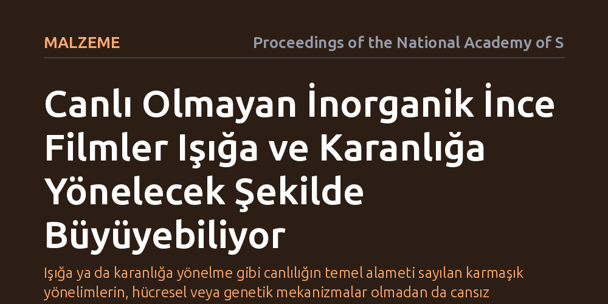

MALZEME · Proceedings of the National Academy of Sciences · 2026-10-09
Araştırmacılar, bitkilere özgü sanılan ışığa ve karanlığa yönelerek büyüme davranışlarının canlı olmayan inorganik malzemelerde gerçekleşip gerçekleşemeyeceğini inceledi. Çalışma, inorganik ince filmlerin optik ve kimyasal etkileşimlerle hem ışığa hem de gölgeye doğru yönelerek büyüyebildiğini ortaya koydu.
Işığa ya da karanlığa yönelme gibi canlılığın temel alameti sayılan karmaşık yönelimlerin, hücresel veya genetik mekanizmalar olmadan da cansız maddede kendiliğinden ortaya çıkabileceğini gösterir.

Penceremizin önündeki bir saksı bitkisinin yapraklarını güneşe çevirmesi (fototropizma) veya tropik bir sarmaşığın tırmanacak ağaç gövdesi bulmak için en koyu gölgeye doğru uzanması (skototropizma), doğada canlılığın en temel alametifarikalarından kabul edilir. Canlılar bu yönelimleri hormonlar, özel ışık algılayıcı proteinler ve hücresel sinyal iletim mekanizmaları sayesinde başarır. Peki, biyolojik hiçbir bileşeni olmayan inorganik bir malzeme de benzer şekilde ışığa ya da karanlığa doğru yönelebilir mi?
Bu soru, canlılık ile cansız madde arasındaki sınırların nerede başlayıp nerede bittiğini anlamak açısından kritik bir önem taşıyor. Eğer yönelimsel büyüme yalnızca biyolojik hücrelerin karmaşık genetik programlamasına bağlı değilse, fiziksel ve kimyasal ilkelerin kendi kendine örgütlenmesi de benzer davranışlar doğurabilir. Araştırmacılar, canlı sistemlerin bu karakteristik davranışını inorganik dünyada arayarak malzeme biliminde yeni bir bakış açısının kapısını aralıyor.
Araştırma ekibi, inorganik ince filmlerin büyüme süreçlerini kontrollü ışık kaynakları altında inceledi. Deneylerde, film yüzeyine farklı açılardan yönlendirilen ışık demetlerinin ve ortamdaki mikroskobik gölgelenmelerin büyüme hızını nasıl etkilediği takip edildi. Malzemenin yüzey morfolojisi, kristal yapısı ve katmanların ilerleme yönü yüksek çözünürlüklü mikroskopi teknikleriyle kaydedildi.
Deneysel gözlemler yalnızca görsel kayıtlarla sınırlı tutulmadı; ışığın saçılması, yüzeydeki optik geribildirim ve kimyasal çökelme hızları arasındaki ilişki matematiksel modellerle desteklendi. Orman ekolojisinde ağaçların ışık için rekabetini açıklayan modellerden ve optik saçılma teorilerinden esinlenilerek, inorganik film yüzeyindeki tepeciklerin komşu bölgeleri gölgeleme dinamikleri simüle edildi.
Deneyler, inorganik ince filmlerin belirli koşullar altında ışık kaynağına doğru yönelerek büyüdüğünü (fototropizm) net bir şekilde gösterdi. Işığın malzeme yüzeyinde tetiklediği yerel reaksiyonlar, ışık alan tepeciklerin daha hızlı büyümesini sağladı ve filmin ana gövdesi ışığın geldiği yöne doğru eğim kazandı. Bu durum, canlı bir bitki filizinin pencereye yönelmesine benzer bir geometri üretti.
Çalışmanın en dikkat çekici bulgusu ise filmlerin bazı özel rejimlerde karanlığa doğru büyüme (skototropizm) davranışı sergilemesi oldu. Tıpkı tropik sarmaşıkların tırmanacak kalın bir ağaç gövdesi bulabilmek için karanlık silüetlere yönelmesi gibi, inorganik film yapıları da belirli kimyasal ve optik gölgeleme koşullarında ışık almayan koyu bölgelere doğru yöneldi. Yazarların belirttiği üzere, "fototropizma canlı organizmaların ayırt edici bir davranışı" iken, bu yönelimin inorganik sistemlerde de ortaya çıkması, karmaşık biyolojik yönelimlerin cansız fiziksel süreçlerle taklit edilebildiğini gösterdi.
Bu bulgular, canlılarda gördüğümüz bazı karmaşık davranışların ortaya çıkması için mutlaka evrimsel bir genetik mekanizmaya ya da sinirsel bir algıya ihtiyaç olmadığını ortaya koyuyor. Basit yerel fizik kuralları, optik geribildirim ve büyüme dinamikleri bir araya geldiğinde, sistem düzeyinde yönelim gibi "akıllı" görünen kolektif davranışlar kendiliğinden belirebiliyor.
Pratik açıdan bakıldığında, ışığa veya gölgeye göre kendi şeklini ayarlayabilen inorganik filmler; güneş pilleri, optik sensörler ve kendi kendini monte edebilen mikro yapılar için yeni tasarım olanakları sunuyor. Malzemenin büyüme yönünü dışarıdan mekanik müdahale olmaksızın sadece ışık desenleriyle yönlendirebilmek, nano ve mikro ölçekli üretim süreçlerinde kendi kendine kılavuzlanan hatların geliştirilmesine zemin hazırlayabilir.